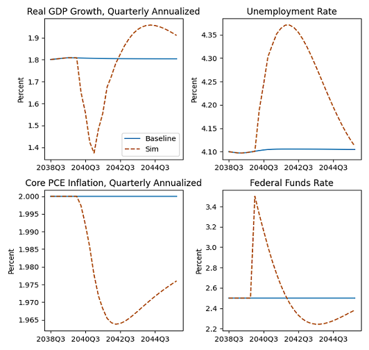
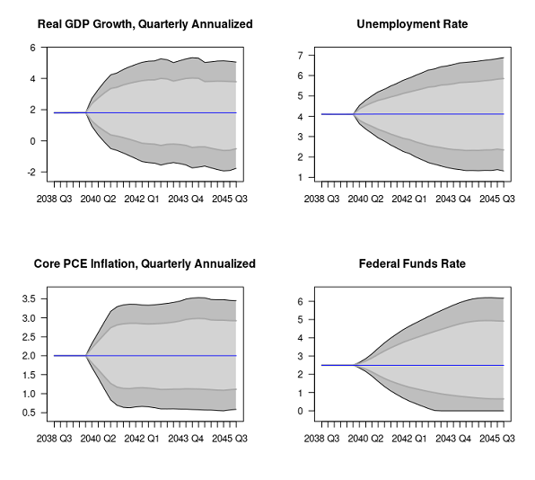
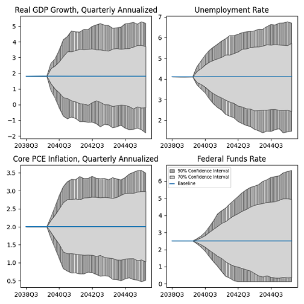

#load bimets
library(bimets)Guest Post contributed by Andrea Luciani, Bank of Italy, Directorate General for Economics, Statistics and Research, maintainer of the bimets package (Time Series and Econometric Modeling) in CRAN
The US Federal Reserve’s econometric model for the US economy (i.e., FRB/US) is publicly available at federalreserve.gov. The website states, “FRB/US is a large-scale estimated general equilibrium model of the US economy that was developed at the Federal Reserve Board, where it has been in use since 1996 for forecasting, analysis of policy options, and research projects.”
FRB/US is a quarterly model with hundreds of equations and variables. The model definition and time series data are available for download on the Federal Reserve website, as is the source code, which allows users to perform several econometric exercises. However, the Federal Reserve publicly distributes source codes only for EViews™ and python.
In this post, we show how to load the FRB/US model, and perform in R the same econometric exercises provided by the Federal Reserve.
The FRB/US model
The Federal Reserve website also states, “Compared with DSGE models, however, FRB/US applies optimization theory more flexibly, which permits its equations to better capture patterns in historical data and facilitates modeling the economy in greater detail… A distinctive feature of FRB/US is its ability to switch between alternative assumptions about how economic agents form expectations. Under the VAR-based option, expectations are derived from the average historical dynamics of the economy as manifested in the predictions of estimated VAR models. Under model-consistent (MC), agents are assumed to form accurate expectations of future outcomes as generated by simulations of FRB/US itself.”
FRB/US is a quarterly model, and counts 284 equations and 365 variables (Feb. 2024 version). The XML model definition is available for download on the Federal Reserve website, and contains, for each endogenous variable, the following information: the variable name, the variable definition with a short description, the economic sector the variable belongs to, the related equation in both EViews™ and python format, coefficients and exogenous variables involved in the equation.
64 endogenous variables are marked as stochastic and, during the stochastic simulation exercise, will be transformed by applying sequences of shocks as drawn randomly from their historical residuals.
14 endogenous variables belong to the MCE group (i.e., Model-Consistent Expectations) and have an alternative equation that contains forward-looking references.
Finally, at the end of the XML model definition, users can find additional information on economic sectors and exogenous variables involved in the model definition.
Moving towards R
FRB/US model definition is available to R users in the FRB__MODEL dataset of the bimets package (bimets ver. 4.0.2, a software framework for time series analysis and econometric modeling):
#load FRB/US MDL definition
data(FRB__MODEL)
#print first 4 equations in model definition
cat(substring(FRB__MODEL,1,1615))MODEL
$DOWNLOADED FROM federalreserve.gov AND CONVERTED TO BIMETS MDL IN Feb, 2024
$FRB/US is a large-scale estimated general equilibrium model of the U.S. economy
$that was developed at the Federal Reserve Board, where it has been in use since 1996
$for forecasting, analysis of policy options, and research projects.
$--------------------------------------------------------------------------
$ ENDOGENOUS SECTION
$-----------------------------------------------
$Financial Sector
$Monetary policy indicator for both thresholds
$DMPTMAX equals one when either the unemployment threshold or
$the inflation threshold is breached.
IDENTITY> dmptmax
IF> dmptlur>=dmptpi
EQ> dmptmax=
dmptlur
IDENTITY> dmptmax
IF> dmptlur<dmptpi
EQ> dmptmax=
dmptpi
$-----------------------------------------------
$Federal funds rate, first diff
IDENTITY> delrff
EQ> delrff=
TSDELTA(rff)
$-----------------------------------------------
$Financial Sector
$Monetary policy indicator for unemployment threshold
$DMPTLUR equals zero when the unemployment rate is above its
$threshold (LURTRSH) one when it is below. A logistic function
$smoothes the transition, improving solution convergence properties.
IDENTITY> dmptlur
EQ> dmptlur=
1/(1+EXP(25*(lur-lurtrsh)))
$-----------------------------------------------
$Financial Sector
$Monetary policy indicator for inflation threshold
$DMPTPI equals zero when expected inflation is below its threshold
$and one when it is above. A logistic function smoothes the
$transition, improving solution convergence properties.
IDENTITY> dmptpi
EQ> dmptpi=
1/(1+EXP(-25*(zpic58-pitrsh)))Dynamic simulation in a monetary policy shock
The first econometric exercise proposed by the Federal Reserve is a dynamic simulation of the FRB/US model under a monetary policy shock. The simulation is operated from 2040-Q1 to 2045-Q4, after the rffintay time series, defined as “Value of eff. federal funds rate given by the inertial Taylor rule”, is shocked by 100 base points in 2040-Q1.
# Load data
data(LONGBASE)
# Load model
data(FRB__MODEL)
model <- LOAD_MODEL(modelText = FRB__MODEL)Analyzing behaviorals...
Analyzing identities...
Optimizing...
Loaded model "FRB__MODEL":
0 behaviorals
284 identities
0 coefficients
...LOAD MODEL OK# Load data into model
model <- LOAD_MODEL_DATA(model, LONGBASE, quietly=TRUE)
# Specify dates
start <- c(2040,1)
end <- normalizeYP(start+c(0,23),4)
# Standard configuration, use surplus ratio targeting
model$modelData$dfpdbt[[start,end]] <- 0
model$modelData$dfpsrp[[start,end]] <- 1
# Solve to baseline with adds
model <- SIMULATE(model,
simType='RESCHECK',
TSRANGE=c(start,end),
ZeroErrorAC = TRUE,
quietly=TRUE)
# 100 bp monetary policy shock
trac <- model$ConstantAdjustmentRESCHECK
trac$rffintay[[start]] <- trac$rffintay[[start]]+1
# Solve
model <- SIMULATE(model,
simAlgo = 'NEWTON',
TSRANGE = c(start,end),
ConstantAdjustment = trac,
BackFill = 12,
quietly=TRUE)R code produces the following charts:

On the other hand, the python code provided by the US Federal Reserve produces very similar results:

Stochastic simulation
Another econometric exercise proposed by the Federal Reserve is a stochastic simulation of the FRB/US model. The stochsim procedure in the pyfrbus python package (available on the Federal Reserve web site) performs a stochastic simulation by applying sequences of shocks to 64 endogneous variables of the model, as drawn randomly from historical residuals. In a similar way in R, the STOCHSIMULATE procedure allows users to shock the same endogenous variables with randomly sampled historical residuals.
R code, omitted for brevity, produces the following charts:

On the other hand, the python code provided by the US Federal Reserve produces very similar results, despite the random numbers generator being different between R and python:

________________
Additional exercises, e.g., rational expectations, endogenous targeting, etc., and computational details are available in the package vignette The U.S. Federal Reserve quarterly model in R with bimets